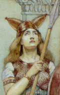

главная  персоналии
персоналии  Боудикка
Боудикка
главная |

Личность в историикраткая энциклопедияПроект «Личность в истории» посвящен людям — современникам грандиозных исторических событий, носителям редких качеств или людям, взгляды которых опередили их время. |
|||||
Коротко |
Статьи |
Персоналии |
Литература |
||
Боудикка |
|||||
|
«Распаляя друг друга <…> речами, они под предводительством женщины царского рода Боудикки (ведь применительно к верховной власти над войском они не делают различия между полами) все как один поднялись против нас». (Корнелий Тацит. Жизнеописание Юлия Агриколы. 16). |
 Фредерик Уоленн. Великие женщины античности: Боудикка. Фрагмент. |
||||
Биографическая справкаБоудикка или Боадицея (лат. Boadicea) — царица британского племени иценов. Жена царя Прасутага. После смерти супруга, в 60 г. подняла восстание против римского владычества в Британии. Первоначально восстанию сопутствовал успех. Войска Боудикки разгромили несколько мелких римских отрядов и захватили города Камулодун, Лондиний и Вералумий. Согласно римским источникам захват городов сопровождался убийствами и грабежами. В решающей битве с римскими войсками под командованием Светония Паулина армия Боудикки (несмотря на ее многократное численное превосходство) была разгромлена. Сама Боудикка умерла, приняв яд. Смерть Боудикки и окончательное поражение восставших относятся к 61 г. Цитаты«Боудикка, поместив на колесницу впереди себя дочерей, когда приближалась к тому или иному племени, восклицала, что британцы привыкли воевать под предводительством женщин, но теперь, рожденная от столь прославленных предков, она мстит не за потерянные царства и богатства, но как простая женщина за отнятую свободу…». (Корнелий Тацит. Анналы. XIV. 35.) «И если британцы подумают, сколь могучи их вооруженные силы и за что они идут в бой, они убедятся, что в этом сражении нужно победить или пасть. Так решила для себя женщина; пусть же мужчины цепляются за жизнь, чтобы прозябать в рабстве..» (Корнелий Тацит. Анналы. XIV. 35.) «…было истреблено, как утверждают некоторые, немногим менее восьмидесяти тысяч британцев <…> Боудикка лишила себя жизни ядом». (Корнелий Тацит. Анналы. XIV. 37.) Список литературы
|
|||||
|